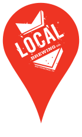
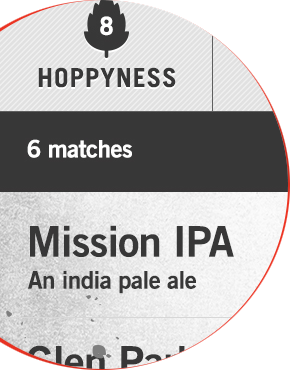
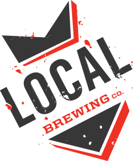

Let's brew this
together
Quick Links
On tap
Beer selector
Beer map
69
Bluxome St.
San Francisco, CA 94107
Open daily
Monday
........................ 3pm - 12pm
Tuesday
....................... 3pm - 12pm
Wednesday
.................. 3pm - 12pm
Thursday
.................... 3pm - 12pm
Friday
.......................... 3pm - 12pm
Saturday
.................... 3pm - 12pm
(415) 555-5555

Find your
perfect brew

Explore our beer list by Hoppyness, Alcohol Volume, and Complexity
Save a custom flavor profile to compare beers
Keep a list of your favorite beers
Try the beer finder

Brewed by hand in
san francisco, ca
since 2010